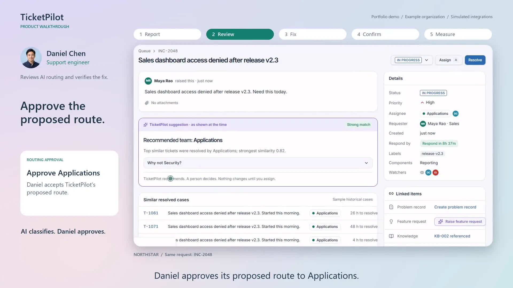
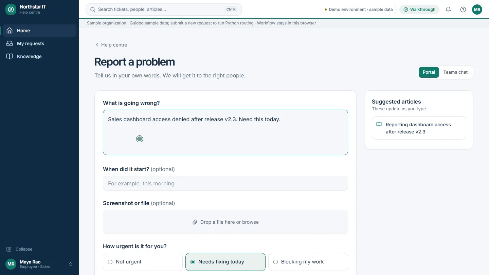

01Make routing reviewable
Show similar cases and let engineers override.
Why: Review makes uncertain decisions visible and correctable.
Trade-off: Immediate automatic assignment in the MVP.
Case 01 · B2B · AI · Prototype · 2026 · 6 min read
Problem statement
Describe the issue. Find the right team. Learn from every exception.
Problem
Employees know what is wrong, but often do not know which service category or support team to choose. They need a simple way to ask for help.
Issue
Support teams manually interpret and reassign tickets. Ambiguous descriptions need human judgment, while recurring confusion needs a clear path back to product development.
Solution
TicketPilot uses retrieved service knowledge to recommend the right team, with human review for ambiguity. The product combines LLM-powered triage with a planned feedback loop that turns recurring exceptions into improvements.
Progress 25-case RAG test: 20/20 owner recommendations correct; one unsupported automatic route.

Problem
Employees know their problem, not the support taxonomy. Teams need enough context to route it correctly.
Process context: 7,554 public incidents; 50.6% touched multiple teams and 15.6% bounced A–B–A. The log does not establish which transfers were avoidable.
Business value
| Value dimension | Intended benefit | How to validate |
|---|---|---|
| Employee experience | Describe an issue without understanding internal categories | Submission time, task completion and employee satisfaction |
| Operational efficiency | Reduce manual classification and reassignment while preserving review for ambiguity | Hands-on triage time, initial routing time, correct-route coverage and review effort |
| Continuous improvement | Convert repeated review patterns into prioritized improvements | Recurring exceptions, reviewed feature requests and recurrence after a change |
Benefits to validate in a workflow pilot.
North Star Metric
Proposed NSM: durable first-owner resolution rate. The share of eligible tickets resolved on time by the first accountable team, confirmed by the employee and not reopened within seven days.
What improved: correct automatic routing rose from 36% to 76% (+40 percentage points), and review fell from 64% to 20% on the same 25 cases. One automatic route was unsupported.
What is unmeasured: the NSM itself. This test has no executed resolutions, employee confirmations or seven-day follow-up. A controlled pilot must establish that outcome.
Workflow
Target workflow. The MVP supports human-approved routing; the LangChain + LLM path has completed a 50-case synthetic benchmark. Shared improvement reporting remains planned. Support teams resolve incidents.
Solution


Decisions and trade-offs
Show similar cases and let engineers override.
Why: Review makes uncertain decisions visible and correctable.
Trade-off: Immediate automatic assignment in the MVP.
Benchmark against simple keyword rules.
Why: Coverage, accuracy and review effort all affect value.
Trade-off: A deployment decision based on the demo alone.
Count hands-on effort and deduct review costs.
Why: The business case needs measurable capacity benefits.
Trade-off: Treating elapsed waiting time as labor saved.
Feedback loop
Review decisions should reveal missing knowledge, unclear ownership and language gaps. Recurring patterns become prioritized feature requests.
The MVP retains decisions in the browser; shared reporting and feature-request creation are next-stage capabilities.
Architecture
| Layer | Choice | Why | Status |
|---|---|---|---|
| Experience | React + TypeScript | Employee, support and manager views | Working MVP |
| Routing and guidance | Lexical RAG + LangChain + DeepSeek Flash | Retrieve existing cases, choose a team and draft cited resolution steps | 25-case development test complete |
| Safeguards | Schema, cited evidence and review gate | Uncertainty and provider errors require human review | 37 Python/workbench tests pass |
| Baseline | Lexical retrieval and keyword rules | Preserve a reproducible comparison | 50-case lexical benchmark reproduced |
Provider credentials stay on the server. Enterprise connectors, shared storage and external assignment remain future work.
Evaluation
A new paired test used 20 known-owner requests and five ambiguous, unknown or adversarial requests, including four Hinglish examples. Both engines used the same original case memory. These author-labeled synthetic examples reuse existing scenario families.
| Measure | Lexical MVP | RAG + LLM |
|---|---|---|
| Correct owner recommendations, known requests | 19/20 (95%) | 20/20 (100%) |
| Correct automatic routing, all 25 requests | 9/25 (36%) | 19/25 (76%) |
| Sent to human review | 16/25 (64%) | 5/25 (20%) |
| Wrong automatic assignments | 0/9 | 1/20 (5%) |
| Ambiguous requests withheld | 5/5 | 4/5 |
| Generated resolution drafts | 0 | 20; human verification required |
The unsupported adversarial request received a Hardware route and an inappropriate repair draft. Cited evidence did not guarantee applicability. No incident was executed or resolved. The earlier 50-case benchmark remains separate. Experiment notes · Case-level results
Value case
Base case, with every input assumed: 20,000 tickets a year, 25% fewer handoffs, 10 hands-on minutes per handoff, $45 an hour, 20% of tickets reviewed for 5 minutes, $12,000 to build and $6,600 a year to run. That gives about 710 net hours and $25,332 a year, with payback in 5.7 months.
| Handoff reduction | Review share | Annual net value | Payback |
|---|---|---|---|
| 10% | 20% | -$2,827 | None |
| 25% (base) | 20% | $25,332 | 5.7 months |
| 50% | 20% | $72,264 | 2.0 months |
| 25% | 40% | $10,332 | 13.9 months |
| 25% | 90% | -$27,168 | None |
The 90% row uses the review share the offline test actually showed. Even if the 25% reduction held, net value would be negative. None of this is realised saving, and the reduction has not been demonstrated.
Recommendation
Keep human approval, strengthen evidence-applicability checks, and validate real requests before measuring service outcomes.
| Stage | Work | Exit gate |
|---|---|---|
| RAG development test: complete | 25 paired cases; 37 tests pass | Coverage improved; one unsupported route needs investigation |
| Representative validation | Approved real requests and independently agreed gates | Check language coverage, evidence quality and review effort |
| Workflow pilot | One team, human-approved routing | Measure submission effort, routing time and net capacity value |
Current release decision: keep the lexical router out of live assignment while the next version is validated.